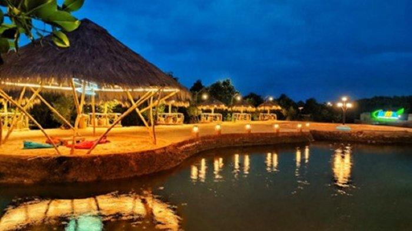

Wisata mangrove Kedatim diawali dari aksi cinta lingkungan yang digagas kawula muda desa. Kegiatannya menanam mangrove di pesisir pantai yang mengitari desa. Ketika hutan mangrove mulai rimbun, terbetik (tersiar) ide mengembangkan wisata alam dan edukasi.
Agar terkelola secara profesional, usaha wisata desa dikelola Badan Usaha Milik Desa Pasopati. Pada tahun 2021, desa memanfaatkan dana desa tidak kurang dari Rp500 juta sebagai penyertaan modal BUM Desa. Anggaran digunakan untuk pembangunan akses dan fasilitas wisata desa.
Resmi dibuka pada Juni 2021, pengunjung langsung meramaikan, menikmati pesona hutan mangrove, dengan tetap menerapkan protokol kesehatan. Ternyata, sepanjang pandemi yang membatasi mobilitas masyarakat, wisata alam terbuka menjadi pilihan yang disambut hangat. Warga berekreasi dan melepas jenuh lantaran terisolasi.
Wisatawan dapat menghirup udara sejuk dari hijaunya pepohonan, sembari jogging atau sekedar berjalan di titian kayu. Sepanjang titian disediakan spot menarik untuk berswafoto, duduk bersantai di gazebo, bahkan ada ruang temu dan diskusi di kedai kopi. Pada malam hari, lampu temaram menyala, menghiasi indahnya lokasi wisata, sehingga mencipta kesan romantis.

Tak kalah menarik, edukasi mangrove juga bisa dilakukan untuk mempelajari berbagai jenis varietas mangrove yang dilestarikan di area wisata.
Menurut Direktur BUMDesa Pasopati, Aji Nur Rahman, wisata mangrove ini telah membantu meningkatkan pendapatan warga desa. Lapangan kerja baru terbuka, bersamaan dengan perdagangan bagi warga lokal.
Pada tahun 2021, yaitu saat pandemi Covid-19, wisata mangrove tetap beromset lebih dari Rp 500 juta, dan berkontribusi untuk Pendapatan Asli Desa sebesar Rp10 Juta.